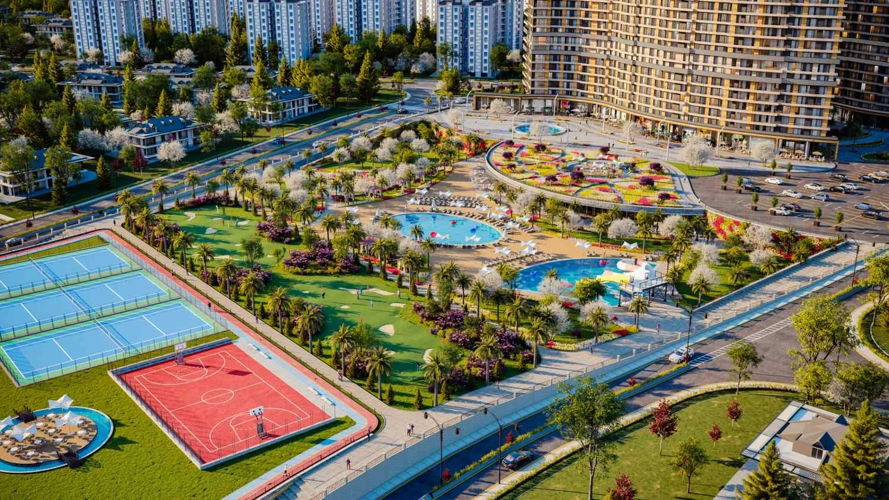

Demir Life
A residential development near Alkent 2000 in Büyükçekmece, with a broad range of apartment sizes and landscaped leisure areas. The project presentation includes lake and sea outlooks, pools and sports facilities.
Photo gallery

Official architectural illustrations; these images do not show the current construction condition.
Living spaces
The published project concept includes indoor and outdoor pools, tennis and basketball courts, a golf area, walking paths and children’s recreation areas.
Büyükçekmece · Istanbul
Located near Alkent 2000 in Büyükçekmece, on Istanbul’s European side. Compare the exact apartment view and your daily routes when arranging a visit.
Choose your home
Request the current apartment selection, price and payment options. Compare the exact unit, view and included services before arranging your purchase.